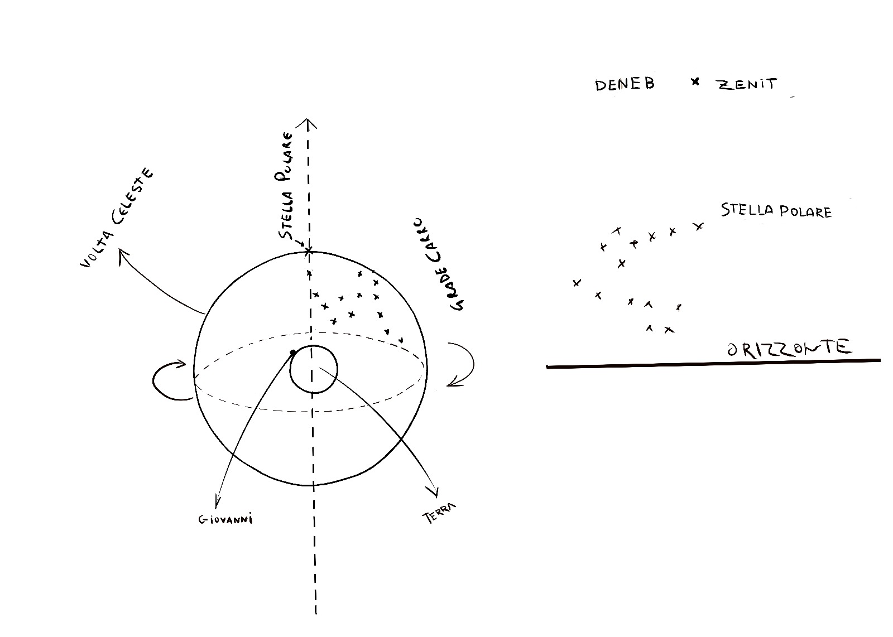

Laura è seduta sulla poltroncina degli ospiti che sta aiutando l’amica a sbrigare un po’ della corrispondenza, visto che lei è impegnata in faccende che la coinvolgono molto di più. Facciamo uno schizzo così si capisce meglio la situazione:
Non è perfetto, ma rende l’idea. Questa è la lettera:
«Cara Caterina,
ti scrivo con le mani sporche di terra e il cuore in fiamme.
Ogni giorno mi sveglio con l’ansia che il cielo sia un po’ più basso,
che il vento porti con sé un alto grido soffocato di una specie che non c’è più.
Eppure continuo a lottare, perché se ci sei tu,
tu che hai il coraggio che io non ho…»
«Vuoi che continui, Cate? Non mi sembra giunga nulla di nuovo alla discussione…»
«Ma sì dai, mi sembra così angosciata, poverina…»
Caterina è a pochi decimetri da Laura, davanti all’armadio. Aggiungiamo anche l’armadio:
Catrina è proprio lì davanti che sceglie i vestiti da mettere in valigia.
Laura riprende, ma il settanta per cento di ciò che legge le sfugge, perché la sua attenzione è catturata dai movimenti mimetici di Alice, seduta sul letto di fronte a lei.
Un viaggio difficile da organizzare, tra biglietti introvabili, alberghi al completo, impegni precedenti e consegne da rispettare sul lavoro. Mancano trentasei ore al volo che la condurrà negli Stati Uniti ed è quasi tutto a posto, ma Caterina non sa che sua sorella le sta cucinando una bella vendetta da gustare calda anziché fredda.
Lei se ne va a New York e la lascia a casa con suo padre e sua madre, proprio ora che potrebbero passare una settimana insieme. Certo, Alice comprende che il lavoro è importante. Infatti, se fosse solo per quello, non le brucerebbe così tanto.
Ma il problema non è il lavoro. In realtà , lei ci va per Mark. Figurati, se non ci fosse lui, avrebbe sicuramente preferito passare l’estate con lei. In fondo, di corsi di aggiornamento ce ne sono tanti, nel mondo. No, lei lo sa che è per Mark.
Così, tranquilla, con il suo PC in mano, a gambe incrociate sul letto, mostra uno sguardo innocente. Ecco, disegnamo anche il letto e visto che ci siamo la scrivania:
Laura si avvicina alla sorella dell’amica per sbirciare, ma Alice, con una piccola rotazione, si sottrae al suo sguardo.
«Scusami, sai!»
Poi incolla il testo nella sezione Lyrics di Suno:
🤠Lyrics:
She leaves and I stay
like a folder left open
half full, half erased
I blink, and she's already gone
«Qui capirai quanto ci sono rimasta male…»
🛠Style Description:
Bilingual emotional synth-pop with ambient textures, cinematic flow, and AI female vocals.
Slow build. Glitchy, dreamlike, bittersweet. Like diary pages sung in code.
«Lascia da perdere, è arrabbiata con me.»
«Non sono arrabbiata, solo che voglio finire una cosa.»
«Ha ragione, sono io che sono troppo curiosa. Però si è fatta un po’ tardi, è ora che vado a prendere Valentina.»
«No, aspetta solo un attimo, ti prego.»
«Ora la scarico, colleghiamo le casse e voilà !»
Le note di pianoforte sintetico arpeggiano velocemente una nenia in Sol maggiore. Poi, con un respiro sussurrato, inizia il primo verso:
Verse
She leaves and I stay
like a folder left open
half full, half erased
I blink, and she's already gone
Questa è circa la scena prima della crisi…
Verse
She goes to New York
I stay with a lamp shaped like a heart
plastic love, three settings
warm, cold, ambient—mine is blinking
«E qui voglio vederti piangere!»
I'm not angry, I'm just here
Una lacrima solca il viso di Caterina, che a stento simula tranquillità continuando ad ordinare le cose da mettere in valigia.
«Certo che le semplifichi proprio la partenza, tu.»
Caterina appoggia il phone e si avvicina alla sorella per abbracciarla.
«Non ci provare!» le urla.
Caterina non reagisce. È abituata. Alice si libera le ginocchia dal PC e lo poggia sul letto.
«Io esco, mangio qualcosa con le ragazze.»
Caterina si asciuga gli occhi.
«Va bene, ma a casa per le dieci. È l’ultima sera che passiamo insieme.»
«Devo andare anch’io, Kate.»
«Va bene Laura, grazie di essere venuta.»
«Ciao Kate. Ciao Alice.»
Prima di chiudere la porta, Laura ha un attimo di esitazione. C’era ancora una cosa, anzi, il motivo principale per cui aveva raggiunto Caterina.
«Ma non sai ancora nulla del visto!»
«Non preoccuparti, Laura. Vedrai che non ci saranno problemi. In ogni caso, se ci fossero difficoltà ti chiamo.»
Saluta l’amica con un bacio e corre a prendere Vale.
Per fortuna manca ancora qualche anno alla sua adolescenza.
Caterina è impegnata nei preparativi per il suo volo transoceanico, con cui spargerà dieci quintali di CO₂ nell'atmosfera. Giovanni, ignaro di tanta minaccia per la biosfera, attende con Ipparchia in prossimità del supermercato. La sua impronta di carbonio è bassa per necessità , non per scelta. Vive nell'ex convitto, senza i comfort di un'abitazione urbanizzata, e produrre più CO₂ di quella che espira è quasi impossibile.
Ipparchia è seduto sotto una quercia vicino all’uscita sul retro, la dumpster zone. Da un momento all’altro i commessi usciranno per le pulizie: quello sarà il segnale. Giovanni avanzerà con calma, pronto a contrattare qualche prodotto in scadenza per sé e per Ipparchia. Il turnover del personale è serrato, e per fortuna tra loro si passano parola, e quando qualcuno lascia il posto, il suo rimpiazzo conosce già Giovanni e le procedure.
La porta si apre: Ipparchia, attenta, capta il segnale e si fa avanti. Giovanni le fa un cenno, ma non si muove subito: vuole essere ben accetto. La prima regola, diceva sempre sua madre, è la buona educazione. E lui non lo dimentica. Quando la ragazza del supermercato lo chiama, Giovanni ricambia con un sorriso. Lei rientra, e dopo poco esce ancora con un cartone non troppo pesante a giudicare dalla nonchalance con cui lo destreggia.
Lo appoggia al pianerottolo delle scale di servizio. Poi lo guarda e gli fa un cenno di richiamo. Ipparchia tira Giovanni, e con passo tranquillo ma deciso si dirigono verso di lei. È un equilibrio delicato. Se corresse potrebbe sembrare disperato o peggio spaventarla. Se andasse troppo piano sarebbe una mancanza di rispetto per il suo tempo. Lei sta lavorando, quindi serve moderazione, come diceva sempre sua mamma. Non troppo, né troppo poco, moderazione. Lei lo aspetta mentre si avvicina.
Accende una sigaretta. I polmoni ne soffrono, ma è ancora tanto giovane e finge che non le faccia davvero male.
«Ciao Giò, ciao bella!»
Ipparchia accetta la carezza e ricambia il saluto ricevuto.
«Ti fa male fumare», le dice sorridendo, talmente gentilmente che lei non sbuffa e spegne la sigaretta.
«Torno dentro!»
«Grazie, prendo il pacco!»
Adesso deve portare il pacco al convitto. La strada non è tanta, ma per Giovanni ricordarla a memoria è comunque sfidante. Nella mente ha catalogato strade, stradelli, edifici alberi e piante.
Questa è la mappa che Giovanni ha nel cervello:
fatta di odori, superfici, distanze misurate a passi e colpi di bastone.
La vegetazione cresce rapidamente, l’edera inghiotte metri di strada ogni mese, i rami delle siepi invadono i marciapiedi.
La mappa va aggiornata di continuo: dove la memoria vacilla, ci sono il fiuto e gli occhi di Ipparchia, che – anche se in parte daltonici – qualcosa vedono.
Iparchia è al suo fianco da quando Giovanni è diventato un senza fissa dimora. Anche lei vagava sola e il loro incontro sarebbe stato degno di una nota nei rotocalchi se qualche giornalista lo avesse testimoniato. Ma questa è la vita di strada, capita di tutto, ma nessuno se ne cura. Ipparchia non lo tradirebbe mai, i suoi sentimenti sono a senso unico. Un fagiano gli taglia la strada. Giovanni sente solo un fruscio veloce dell’erba e in un attimo è solo. Adesso deve ritrovarla e non sa se la mappa che ha sarà sufficiente.
Il silenzio si stende, pesante, tra le erbacce. Giovanni ascolta il suo stesso respiro, poi si rimette in cammino.
«Cosa prepari per cena?»
«Tu cosa avresti voglia di mangiare?»
| Laura e Valentina vivono in una tiny house, quella che vedi qui a sinistra è la zona giorno. |
«I bastoncini fritti?»
«Infatti.»
«Davvero ci sono i bastoncini?»
«No, c’è il riso integrale con le verdure.»
«Perché sempre le verdure?»
«Perché ce ne abbiamo nell’orto, sono buone e fanno bene.»
«Ma io ho voglia di bastoncini. Quando li mangiamo?»
«A fine venerdì vado a fare la spesa.»
Rocky abbaia e si avvicina alla porta. Laura non finisce la frase e dalla vetrata intravede Caterina che sta arrivando.
«Guarda, arriva Caterina. Non farle vedere che fai i capricci.»
Caterina raggiunge la pedana antistante la vetrata, ma non fa in tempo a bussare perché Valentina è già corsa ad aprire. Non aspettava nessuno, per cui Vale si è distesa con il tappeto davanti all’entrata. Caterina non entra subito. Penne, pennarelli, lapis, fogli di album da disegno le sbarrano la strada, ma Vale le prende la mano e la trascina dentro, con un piccolo salto sopra la distesa.
«Stai facendo i compiti?»
«Anche, ma non solo. Stavo disegnando la terra di Hokuto.»
«La terra di Hokuto? E dove si trova?»
«In Giappone, dopo la Cina.»
Caterina si inginocchia su un cuscino accanto a Valentina.
«Vedi, qui è dove si trova la scuola di Okuto.»
Caterina si avvicina al disegno.
«Sì? C’è anche un maestro?»
«Certo, è il padre di tre fratelli…>
«Vale, forse Caterina doveva dirmi qualcosa…»
«Lascia che mi racconti Laura. E’ passato tanto tempo da quando Alice non mi mostra più i suoi disegni…»
«Anche Alice fa i disegni? Me li porti?»
«Li faceva da piccola tesoro, adesso mi scrive le canzoni….»
«Che bello, le voglio ascoltare!»
Caterina le sorride, ma poi appoggia il disegno sul tavolo.
«Mi hanno negato il visto, Laura. Ho tempo fino alle ventiquattro per fare ricorso.»
Laura appoggia il coltello sul tagliere e guarda verso l’amica.
«Quando l’hai saputo?»
«Due ore fa. Ero a casa mia e non lo sapevo.»
«Hai ragione, Kate, scusami.»
«No, scusami tu. È che sono disperata.»
«Ma hai già sentito Mark?»
«Sì, è stato lui a dirmi della possibilità di fare ricorso.»
«Oh, Laura, come facciamo?»
Laura si avvicina e la prende per le braccia.
«Kate, ne abbiamo passate di peggio.»
«Però, se il tempo stringe, vediamo prima il ricorso, poi apparecchiamo.»
Non finisce la frase che il brontolio della pancia di Valentina rompe l’attenzione che si era creata.
«Non ceniamo?»
«Ceniamo?»
«Tra poco, Vale.»
Laura prende il portatile dalla cameretta insieme a un tavolino pieghevole. Le due amiche si siedono accanto a Valentina.
«Vediamo come funziona il ricorso.»
Caterina accenna un sorriso, ma la voce le trema: «Ho tempo fino a mezzanotte.»
Laura la fissa per un istante, poi abbassa lo sguardo sullo schermo.
«E Mark… ti ha detto tutto del suo lavoro?»
«Credo… di sì… perché?»
Laura inspira piano. «Perché forse qualcuno non ti vuole lì.»
«Ippa! Ippa! Ipparchia!»
La sta chiamando forte, ma ancora non torna. Giovanni si siede sul muretto, lì dove aveva segnato con la lettera A.
Dietro di lui, un edificio in rovina che non ha ancora esplorato. Tiene il cartone sulle ginocchia e lo fissa.
Schopenhauer,”L’arte di ottenere ragione”, stratagemma numero uno. Lo ripete tutto. Sa che sono passati circa trenta secondi. Se fosse stato un matematico, avrebbe contato, ma non era la matematica la sua passione.
Arriva allo stratagemma trentotto. Un’ora, e Ipparchia non è ancora tornata.
Dietro di lui, un luogo ignoto. Alla sua destra, la strada per il supermercato; a sinistra, la strada verso casa. Davanti, una via semi-inesplorata, ma la più probabile per ritrovare la cagnetta. Si incammina in quella direzione, continuando a chiamarla.
La strada diventa bianca: l’asfalto finisce, inizia la ghiaia. È terra battuta. Da entrambi i lati, lo stesso fruscio tra gli alberi. Ogni quindici metri, un tronco più grande degli altri.
Quando Ipparchia lo ha lasciato erano circa le otto di sera, quindi ora è quasi buio. Per lui non cambia molto, ma i cani usano anche la vista.
Arriva a un incrocio: la strada bianca curva a destra, mentre dritto torna asfaltata.
«Dove sei andata? Non seguivi una lepre?»
Giovanni tiene la destra e si addentra in campagna. Gli alberi continuano a costeggiare la strada, ne conta nove, poi all’improvviso l’asfalto ritorna.

Attende qualche minuto. Sente passare un veicolo. La strada che ha incontrato taglia quella bianca: deve essere una vecchia via di comunicazione.
Sta per tornare indietro, quando dall’altra parte della strada una voce familiare lo fa voltare:
«Hippa!»
Attraversa senza esitazione.
«HIppa!» Le va incontro, lei rimane ferma, la raggiunge e capisce cosa è successo: guinzaglio di corda è rimasto incastrato in qualche anfratto, ma Giovanni la libera facilmente.
Ipparchia lo lecca, ma… due lingue lo sfiorano. Un altro cane è accanto a lei.
«C’è nessuno?» chiama più volte. «C’è un cane qui! E’ di qualcuno questo cane?»
Nessuna risposta.
«Andiamo, Hippa.»
Ripartono e sul tratto asfaltato il rumore è quello di otto zampe.
Raggiungono di nuovo la strada bianca. Giovanni si inginocchia, osserva il nuovo arrivato.
«E tu? Ci segui?» Si gratta la testa. «In ogni caso, non saprei come altro aiutarti per ora. Va bene, andiamo a casa, poi vedremo.»
Ripercorre la strada dell’andata, passo dopo passo, rumore dopo rumore, odore dopo odore. Ritrova il pacco.
«Coraggio, è tardi, ma si va a cena.»
Giovanni regge il pacco per le ultime decine di metri che lo separano dal rifugio.
L’odore delle rose dell’ultima abitazione si mescola alla lavanda spontanea che cresce nel parco abbandonato dell’ex convitto.
Avanza tra spine di more e ciuffi di rosmarino, che pungono le gambe e coprono l’odore di Ippa e dell’altro cane. Un dedalo verde che è la sua protezione segreta.
Le braccia gli pesano, ma ormai ce l’ha fatta.
Un ramo si spezza a pochi metri:
«Ehi, c’è qualcuno?»
Silenzio. Nulla di strano, forse solo un ramo secco.
Manca solo da salire la scala antincendio quando, alle sue spalle, una voce lo ferma:
«…Appoggia il pacco, amico.»
Giovanni resta immobile.
«Mi hai trovato.» Lo dice lentamente, come se conoscesse già le parole.
Poi, lentamente, posa il pacco sul primo pianerottolo e impercettibilmente lascia scorrere la mano verso il fianco.
«Io non lo farei…» la voce è leggermente coperta da Hipparchia e il nuovo compagno che ringhiano sommessamente, il pelo irto, lo sguardo fisso verso il buio alle sue spalle.
«Tu non sei me, perchè tu sei…»
Un passo nel buio. Qualcosa striscia tra le foglie secche, appena oltre il cerchio di luce.
Giovanni stringe le mascelle.
Hipparchia e l’altro cane ringhiano più forte, le zampe piantate a terra.
Poi la voce, ferma e bassa:
«… un uomo morto.»
Un colpo secco, come di legno che batte sul metallo, rompe il silenzio.
«Vale vai a lavarti le mani, è pronto»
«Deve venire anche Caterina però!»
«Vai pure Cate, ne parliamo dopo cena, ma credo di aver capito il problema, e forse ho un’idea per sbloccare la situazione. Però ora mangiamo, le abitudini sono fondamentali per Valentina…»
«Lo capisco. Vado a lavarmi le mani.»
Hanno finito di mangiare: Rocky dorme ai piedi di Cate sazio di quanto gli è stato passato. Brutta abitudine dare da mangiare ai pulciosi da tavola, difficilmente vi rinunceranno!
Laura si alza per sparecchiare, Valentina scappa sul tappeto per finire i suoi disegni, mentre lo sguardo di Caterina torna serio e preoccupato:
«Lo sapevo che il lavoro di Mark prima o poi mi avrebbe ostacolato!»
«È probabile che la compagnia pretenda controlli stretti sui parenti. Non possono rischiare: tu hai già manifestato contro di loro.»
«È il colmo. Non posso andare a New York perché il mio fidanzato lavora per una compagnia che detta le strategie energetiche. Quindi la mia libertà dipende dai miei affetti? Come posso accettarlo, Laura?»
«Cate…»
«no, scusami, tu non c’entri.»
«Cate, posso fare un paio di telefonate»
«Ma Laura, non volevo…»
«Non preoccuparti. Ora però lasciami da sola, metto a letto Vale e me ne occupo.»
«Sì, vado. Ormai deve tornare anche Alice.»
«Mi fai sapere?»
«Sì, tranquilla. Ti accompagno.»
Laura e Caterina escono sulla pedana e raggiungono il prato.
«Fa fresco…»
«mi sa che hai lasciato la giacca in casa. Te la porto.»
Caterina rimane sola. Alza lo sguardo verso le stelle.
«Eccolo, Kate.»
«Grazie.»
«Allora, mi aggiorni?»
«Certo.»
Caterina si dirige verso casa mentre Laura guarda l’amica diventare una luce nel firmamento.
«Andiamo a letto!»
La voce di Valentina la raggiunge. La sente forte.
Rientra. Valentina si è già lavata i denti e ha steso i due futon in camera.
«Hai proprio sonno?»
«No, è che voglio la storia. Dai, leggiamo!»
«Ma… ok, però solo un capitolo, perché poi devo fare una cosa per Kate.»
«Cosa devi fare?»
«Una cosa da grandi. Meglio se non te la dico, sennò poi dovrei tagliarti la lingua!»
Valentina ride. Laura prende il manga dalla libreria in sala e si sdraia sul futon vicino a lei.
Raggiungono il segno dove erano arrivate a leggere la sera prima. Vale appoggia la testa sulle spalle di Laura, che comincia a leggere le nuvolette.
Scorrono cinque pagine, poi Vale sbadiglia.
«Hai sonno? Non finiamo il capitolo?»
«È lo stesso, adesso dormo. Tu cosa fai?»
«Devo fare quella cosa per Caterina»
«Posso venire con te?»
«Ma non hai detto che hai sonno»
«Si, ma voglio vedere che…»
Valentina non finisce la frase, ha davvero sonno. Comunque Laura è abituata a vederla crollare di sera, d’altra parte anche se non è una psicologa conosce gli effetti della perdita anche su sé stessa.
Lascia la porta della loro stanza socchiusa. Prende la caraffa di tè freddo dal frigo e lo versa in un bicchiere di vetro grosso di color arancione. Dal credenzino sotto la libreria prende il DPL, un dispositivo di programmazione con kernel LInux. Non farà telefonate, forzerà il server della polizia municipale e cancellerà solo qualche dato, senza fare danni. Un’azione discutibile ma efficace.
«Vediamo la situazione»
Laura schizza la rete: i dati di Cate devono svanire dal server giusto un attimo prima che il DHS, via TECS, chieda l’accesso. Poi tornano, invisibili come se nulla fosse.
«Abbiamo 128 minuti per mappare l'infrastruttura e segnare i punti deboli. Prima una perlustrazione a bassa intensità , senza far rumore. Poi agganciamo le difese, quasi sicuro sulle porte 80 e 22. Da lì pianifichiamo l’intrusione: passare il firewall, beccare uno user debole e la sua password. Se va bene troviamo pure una falla SQL, alteriamo quel che serve e spariamo prima che partano i controlli.
Ce la possiamo fare, Rocky.»
Allunga la mano, d’istinto, verso la cuccia.
«Rocky? Dove sei Rocky?»
Luca è a pochi metri da Giovanni e ha un vantaggio evidente: infatti, ci vede.
Ipparchia non ha dato segni di nervosismo, ma il secondo cane mostra di essere pronto a reagire ad un'aggressione.
«Allora ferma questo colpo!» grida, e si lancia verso Giovanni brandendo un bastone sopra la testa.
Raggiunge il MA-AI per colpirlo, ma a quel punto i suoi movimenti si fanno lenti. Giovanni abbassa di poco la testa, alza le mani e rapidamente blocca il bastone.
Osservandolo dall'esterno, sembra che stia pregando. Ha le mani chiuse, palmo contro palmo, e in mezzo c'è il bastone. Una contromossa ninja.
«Dai» gli dice. «Adesso aiutami. Prendi il pacco, Luca.»
«Ma questo? Dove lo hai preso?»
«Non lo so. Ha seguito Ipparchia.»
«E come si chiama?»
«Non lo so.»
«Ecco, è scritto sul collare, Rocky.»
Rocky lo guarda. Ha riconosciuto il suo nome.
«C’è un numero da chiamare?»
«Sì, è qui, guarda.»
Passa qualche istante.
«Scusa, comunque c’è.»
«Bene, allora domani lo accompagneremo dai vigili. Ci penseranno loro. Portiamolo dentro e speriamo che per oggi non scappi.»
«Lo leghiamo?»
Giovanni attende. Non risponde subito.
«No, prima la libertà .»
Luca solleva il pacco e salgono per le scale antincendio. Poi un rumore improvviso.
«Attento!»
Luca riprende l’equilibrio. La scala è senza parapetto e alcuni gradini sono bucati. Ma con un po’ di attenzione i due riescono a raggiungere la porta a finestra del primo piano.
Ma un carrello della spesa carico di stracci e prodotti blocca l’entrata.
Non è un carrello in buone condizioni. Mancano diverse sfere dai cuscinetti delle ruote, ma sarebbe comodo per portare la spesa dal supermercato. Ormai di carrelli non se ne trovano più.
«Meglio salire al secondo.»
«Ci sono, le pulizie?»
«Mi sa di sì.»
«Ok, saliamo.»
«Ci segue anche Rocky?»
«Sì, è dietro Ippa.»
«Speriamo non facciano storie… già si lamentano di lei.»
«Dovrebbero essere in aula 1. Se scendiamo dritti non lo vedranno neanche.»
«Hai ragione.»
Giovanni rallenta il passo per assicurarsi del terreno sotto i piedi, perché non conosce bene la seconda rampa delle scale. Entrare al primo piano è molto più semplice, ma adesso le casalinghe stanno facendo le pulizie, e a memoria di convitto nessuno ha mai calpestato dove le casalinghe stanno pulendo.
Sarebbe un errore irreparabile, perché significativo di ignoranza delle regole elementari di appartenenza a una comunità rispettabile. Basta riconoscere alcuni segnali elementari per non creare situazioni problematiche, e uno di questi è la presenza del carrello dei prodotti: un segnale universale di pulizia in corso. Impensabile spostarlo per passare. Essere civili si riconosce da queste attenzioni.
Ha lasciato Valentina in casa da sola per cercare Rocky.
Ma nei pressi di casa non lo trova.
Adesso si trova di fronte a un dilemma: proseguire la sua intrusione etica ed aiutare l’amica nel poco tempo rimasto, o cercare il suo cucciolo prima che si ritrovi in qualche guaio?
«Cate, ho bisogno di un favore. Rocky è scappato.»
«Oddio, quando?»
«Non lo so. Forse quando sono entrata per prenderti la giacca. Comunque devo andare a cercarlo. Però ho bisogno per Vale.»
«Certo. Dammi dieci minuti.»
Dopo tredici minuti Caterina e Alice atterrano nel giardino di Laura. Quando sente il rumore lei esce sulla pedana, già pronta per la sua rescue action. Non ha lasciato nulla al caso.
Un cane in un territorio misto può perdersi ovunque: da una linea abbandonata della metro a un centro di assistenza per l’intelligenza artificiale. Comunque, a quanto risulta, dal suo segnalatore non è andato troppo lontano. Sembra essere in un boschetto a poche centinaia di metri.
Nel suo zaino ha:
– una corda in microfibra mano tessuta,
– una carrucola smart a riduzione di carico,
– guanti grip GECO,
– un micro drone da zaino con telecomando e telecamera termica,
– un visore Augmented Reality multifunzionale,
– sfere da esplorazione,
– spray a schiuma rapida,
– una batteria al grafene ultracompatta,
– una radio Mesh Network autonoma e un beacon personale,
– infine un esoscheletro pieghevole e una barella smart ultracompatta.
Alice la osserva ammirata. Laura indossa una tuta nera attillata.
«Cosa c’è nello zaino?»
«Niente, amore, ho preso i suoi croccantini per chiamarlo.»
È vero, ci sono anche croccantini.
«Dovrebbe essere qui vicino. Arrivo subito.»
«Laura, posso venire con te? Può restare Alice con Vale?»
«In effetti…»
«Sì, ci penso io.»
Caterina indossa una minigonna una camicetta e un paio di scarpette con un po’ di tacco. Ha un abbigliamento perfetto per quello che le attende.
«Ok, mi raccomando, Alice.»
Alice non risponde. Sorride ed entra in casa e le guarda dalla vetrata.
Prenderanno il drone? No, sembra si avviino a piedi lungo la capezzagna. Qui ci sono già passate insieme, quella sera, prima della loro avventura nel computer quantistico. Sì, quella è stata davvero una bella sfida. La posta in gioco era alta, la libertà di essere decoerenti. Ma ora la questione è altrettanto seria.
La strada termina in un incrocio a T. Il sensore indica che Rocky si trova davanti a loro a circa ottanta metri, non a destra e non a sinistra.
«Dovremo entrare nel campo?»
«Se procediamo, e prendiamo qui a sinistra e seguiamo la strada, ci possiamo avvicinare un po’. Ma alla fine credo che dovremmo comunque entrare. Rocky mi sembra in mezzo al campo.»
«Di quanto la allunghiamo?»
«Circa seicento metri, direi. Solo cinque minuti. Cosa ne dici?»
«Forse era meglio venire con il drone?»
«Rocky ha paura dei droni, Cate, sarebbe stato peggio.»
«Dai, decidi tu allora, Laura.»
«Beh, allora avviciniamoci seguendo la strada, poi valutiamo.»
«Cosa dice la posizione?»
«Sembra fermo, speriamo stia bene, non rilevo i parametri biometrici.»
«Cosa significa, Laura?»
«Ma niente, mi sa che semplicemente non ho rinnovato l’abbonamento.»
«Qui svoltiamo a destra.»
«Ehi! È messa male questa strada.»
«Tutta l’area ormai è un po’ andata.»
«Ecco, di nuovo a destra e tra un centinaio di metri dovremmo esserci.»
«Non siamo mai venute qui insieme, vero?»
«No, ci siamo fermate alla panchina. Comunque anch’io erano anni che non facevo questa strada. Forse l’ultima volta sono venuta con mio padre, poco prima che nascesse Valentina.»
«A proposito, chissà come se la cavano quelle due.»
«Dietro il cespuglio c’è un cancello, ma non mi risulta nella mappa.»
«Comunque Rocky dovrebbe essere qui a trenta metri, solo che non vedo come entrare.»
«Vediamo se c’è un varco. Qui, Laura.»
«Grazie, Kate, sono contenta che tu sia venuta con me.»
«Dai, proviamo a entrare.»
«Aspetta, ma c’è una scritta: Convitto Cardinal Mora. Lavori di ricostruzione. Ma la data è del 1970! Ecco perché non è più nella mappa.»
«Quindi Rocky sarà qui dentro.»
«Ora lo scopriamo.»
Laura e Caterina superano il confine tra il presente e questo mondo che appartiene a un passato dimenticato.
Riusciranno a uscire indenni anche questa volta?
«Piano Luca, non sono pratico di questo piano, scusami.»
La scena è da manuale di arte drammatica: Luca procede al buio del secondo piano del convitto del Cardinal Mora, reggendo il pacco con la spesa. Giovanni lo segue a ruota, seguito a sua volta da Ipparchia che seguita da Rocky.
Il trenino poli specie vuole raggiungere la cucina al piano terra senza dare nell’occhio, perché le casalinghe non gradirebbero sicuramente un secondo cane. Giovanni non ha mai subito le loro punizioni: è grande, e rispettando sa farsi rispettare, ma Luca, con i suoi problemi di iperattivismo, è finito diverse volte in gattabuia e preferisce non finirci ancora.
«Passiamo per la palestra e raggiungiamo le scale.»
«Va bene, Luca, fai tu strada.»
Altri ragazzini sono presenti nella palestra e stanno giocando con videogiochi retrò. Luca li saluta a cenni, ma non si ferma con loro.
L’attenzione di tutti è verso Rocky: la curiosità è alta, ma nessuno lascia la console, anche se gli occhi vanno e vengono dal cane.
Il trenino esce dalla seconda porta e prende le scale. Come vedi qui sotto le due porte sono allineate alla tromba.
Giovanni si tiene radente al muro. Raggiungono il primo piano. Le casalinghe sono al lavoro e si sente benissimo.
Ma basta passare un attimo, basta continuare a scendere le scale.
In mezzo alla rampa c’è un buco. Giovanni lo sa. È radente al muro, ma conosce quel buco.
Per un attimo pensa a Rocky, ma anche lui è e rimane radente al muro.
Per ora nessun problema.
Un’altra rampa e raggiungono la Hall al piano terra.
Qui Giovanni si muove sicuro, punta dritto alla porta della ex Mensa, mentre Luca lo segue con affanno.
Il pacco comincia a farsi sentire.
Rocky si guarda intorno. I cavalletti devono sembrargli ottimi per una pausa pipì, ma per fortuna non ne approfitta.
Una candela è accesa. Qualcuno sta già mangiando.
Ippa non cede al richiamo dell’odore, ma Rocky non è ancora altrettanto disciplinato.
Si distacca dalla comitiva e va verso il tavolino.
Luca lo guarda.
«No, Rocky, fermo!»
È rapido. Non è ancora un ninja, ma ha la prontezza di lasciare andare i beni sostituibili per provare a salvare una vita non sostituibile. Il pacco cade mentre lui si lancia per afferrare il nuovo amico.
Dopo 60 secondi la situazione è questa: In mensa è rimasto solo Giovanni. Chi altro c’era si è dileguato.
Luca è vigile e cosciente, ma malamente incastrato non riesce a far forza.
Giovanni parla con lui mentre Rocky abbaia.
«Mi arriva alla bocca. Non riesco a tenere su la testa.»
«Stai tranquillo, non salirà di livello.»
«Sì, sì.»
«Ci sono io, ti faccio uscire.»
Giovanni chiama ancora aiuto, ma anche qui nel convitto le cose sembrano andare come fuori.
«Vado a chiamare qualcuno. Torno subito.»
«Non lasciarmi da solo!»
«C’è Rocky, arrivo subito.»
Ippa lo segue. Corre nella hall e poi verso l’entrata principale.
Solleva la barra e si fa giusto lo spazio per passare.
«Ehi amico, che passa?»
Una voce lo coglie appena si fa fuori.
«Ho bisogno. Uno dei ragazzini è finito nel pozzo.»
«Ai, mi sono graffiata.»
«Di qua, Kate, c’è un passaggio.»
«Ah, ma perché ho sempre la gonna?»
«Arrivo, Laura.»
«Certo che questo giardino non vede un giardiniere da un bel po’ di tempo.»
«Giardiniere, qui ci vorrebbe… non farmelo dire, non sarebbe ecologico.»
«Guarda, Kate, lì c’è un bidone con una rete. Forse ci vede qualcuno?»
«Non lo so, questo edificio non è neanche sulla mappa. Andiamo a vedere, Rocky dovrebbe essere vicinissimo ormai.»
«Il bidone è caldo, qualcuno dimora qui. Cosa facciamo, Laura? Rocky potrebbe essere dentro, proviamo a chiamarlo?»
«È meglio di no. Se c’è qualcuno, potremmo mettergli paura, farlo scappare e Rocky con lui. Direi che la cosa migliore da fare adesso è entrare. Vediamo se c’è un punto di accesso libero.»
«Cosa c’è che non va, Laura?»
«Cerchiamo un accesso con il drone.»
«Ma la porta è un po’ aperta, mi sembra.»
«Non va bene, ci serve un’entrata che non ci faccia notare. Meglio non rischiare.»
Caterina si avvicina alla scala antincendio. Ne testa la stabilità .
«Laura, qui, vieni» le sussurra.
Quando Laura la raggiunge, Caterina ha salito una rampa e si trova tra la terra e il primo piano.
«Coraggio, saliamo!»
Caterina è molto decisa, un po’ insolita per lei. Comunque fa strada Laura.
«Hai assolutamente ragione a non entrare nella porta principale. Non stiamo entrando in una proprietà privata. Questo è proprio un altro ecosistema e la prima regola è quella di non perturbarlo.»
«Aspetta, Laura, c’è un carrello. Nella spesa, davanti alla porta.»
Caterina lo spinge via con forza. Per una che si perde in un bicchiere d’acqua, niente male.
«Ecco, adesso il passaggio è libero» sussurra, divertita. «E senza esserci fatte notare.»
Laura la raggiunge. Entrano entrambe. È buio, faticano a vedere.
«Fermiamoci un attimo.»
Laura parla con un filo di voce. Estrae dallo zaino una scatolina nera.
«Lo attivo comunque.»
«Cosa vuoi fare? Non siamo già dentro?»
Laura attiva il drone, il LED RX di Laura lampeggia: niente connettività , solo registrazione locale. «Non basta per la mappa 3D», sussurra.
Laura controlla. Confermato. Non hanno connettività globale. Può solo raccogliere ma non processare. La situazione è delineata qui sotto:

«Peccato che non riesca a ricostruire la struttura ora…»
«Wow, Laura! Volevi una mappa di questo posto in 3D? Ma non cerchiamo Rocky ora?»
«Sì, direi…»
Laura viene interrotta da un latrato. Poi una voce maschile.
«Kate e Rocky, mi sembra venga da sotto. Andiamo a vedere.»
Si fanno strada tra una distesa di banchi in legno massiccio, un po’ pesanti da spostare, ma non così fitti da non poter essere aggirati.
Escono dall’aula. Il pavimento del corridoio è un po’ bagnato, ma odora di pulito.
«Non ci sono pozzanghere,» commenta Laura. «Non è acqua infiltrata. Poi il soffitto è asciutto.»
Ancora un latrato. Camminano verso le scale. Intorno non vedono nessuno, nessun rumore, tranne quelli provenienti dal piano inferiore.
E nessuna luce, tranne i LED RX del ricevitore di Laura.
«Scendiamo, Kate, ma occhio a non scivolare.»
Raggiungono la hall. Rocky abbaia, ma il latrato sembra provenire da ancora più in basso e uscire dalla porta a loro destra.
Entrano, sono i bagni. Il suono proviene da una delle turche.
«Vieni a sentire, Laura.»
Si avvicinano, si abbassano insieme, ma in un attimo… sbam! La porta si chiude e scatta una serratura.
Caterina grida. Qualcuno le ha chiuse dentro.
«Riesci a vederlo?»
«No, non vedo nulla. Comunque ci serve una corda.»
«Dobbiamo chiamare aiuto. È troppo pericoloso per Luca stare lì.»
«Giovanni, sono d’accordo, ma tu non ci vedi. Io, zoppico, prima di riuscire ad avvertire qualcuno, Luca potrebbe…»
Il discorso dei due è interrotto dai latrati e dal richiamo di Luca.
«Aiuto, l’acqua sta salendo! Non abbiamo mezz’ora, forse neanche dieci minuti, dobbiamo tirarlo fuori.»
«Laura, ho paura, non si apre.»
«Stiamo calme, Cate. Una via d’uscita la troviamo.»
«Ma la porta è bloccata dall’esterno, non si muove neanche di un millimetro.»
Laura armeggia con lo zaino.
«Hai un cacciavite?»
Laura passa a Caterina un piccolo piede di porco.
«Non credo ci farai molto, purtroppo.»
«Ma non cercavo quello. Ecco, la radio.»
La accende. Crea il canale. La radio non ha bisogno di connettività globale.
«Ehi, che succede?»
Una luce lampeggia nella cucina a soggiorno, mentre Alice sta curiosando tra le foto di Laura quando era adolescente. Mentre guarda curiosa la luce, si aggiunge un cicalino.
«E’ Laura! Rispondi»
«Vale ti sei svegliata? Ma… in che senso è çaura?»
«Alla radio, aspetta, faccio io. Tatona, cosa hai fatto?»
«Sei con Alice?»
«Sì, siamo qui. Cosa stai facendo? E Rocky dov’è Laura? Perché non è qui?»
«Ascoltami, Vale. Va tutto bene, ma abbiamo bisogno di voi per trovarlo.»
«C’è anche Kate? Stai bene?»
«Sì, Alice, sto bene. Ascolta Laura adesso.»
«Ragazze, dovete fare una cosa per noi. Non è difficile, ma è estremamente importante. Ok?»
Laura non racconta tutto. Sono troppo piccole e potrebbero spaventarsi. La situazione sua e di Kate è piuttosto complicata.
Ma se ora riesce a lanciare la ricostruzione della mappa 3D sul suo server locale, potrebbe capire dove si trova Rocky e con un po’ di fortuna raggiungerlo.
Quando finisce di istruire le due ragazze, anche il led RX termina di lampeggiare e per 5 secondi si accende il led blu TX.
I dati sono stati trasmessi sul server a casa sua.
«Bene, potete cominciare.»
«Luca, mi senti? Prova ad afferrare la corda.»
«Aiuto, non riesco a prenderla. C’è il cane sopra di me.»
«Dobbiamo legare una massa alla cima della corda per farla scendere fino a lui.»
«Un sasso? Cosa ne dici?»
«No, aspetta, in cucina c’è la bilancia, il peso da un chilogrammo ha un pomello bello grosso. Vado a prenderlo.»
Giovanni si allontana.
«Stai tranquillo, Luca, ti liberiamo.»
«Invio» e Vale preme il bottone della trasmittente radio. Passano pochi istanti. «Ce l’ho! Brave ragazze, ora chiudo la trasmissione.»
«Va bene, portate a casa Rocky!»
«Ecco, vediamo la mappa. Come pensavo qui sotto c’è un intercapedine ispezionabile. Probabilmente Rocky è qui sotto.»
«Sì, ma come usciamo?»
«Credo sia possibile. Aiutami, vediamo se la turca si sposta.»
«Cosa?»
Laura afferra il paranco e solleva la turca di qualche centimetro.
«Aiutami, Kate!»
«Wow, ma è vuoto qui sotto!»
«Sì, è un cavedio tecnico, un classico anni settanta.»
«Laura, ma…»
«Kate, ora devi aiutarmi. Io entro nel pozzetto. Tu tieni la radio e rimani in ascolto.»
«Ok, Laura, io aspetto qui.»
Laura indossa lo zaino e prova a calarsi, ma i piedi non toccano.
Il tubo si lascia scivolare fino a terra, dove l’acqua deve raggiungere quasi l’inguine.
«Cavolo, è tutto allagato qui sotto.»
«Laura aiuto! Qualcuno sta cercando di entrare!»
«Qualcosa si sta avvicinando.»
«Stai calmo, non è niente...»
«Forse un pesce.»
«Non è un pesce. Sento muovere l’acqua.»
«C’è qualcuno qui dentro? C’è qualcuno? C’è qualcuno?»
«Cate, mi senti? Chi sta cercando di entrare?»
«Laura, torna su!»
«Non riesco, Cate. Sono in un cunicolo stretto. Dammi un attimo.»
«Ecco, adesso apro.»
La porta del bagno si apre all’improvviso. Caterina resta immobile. Osserva lo sconosciuto di fronte a lei.
«C’è qualcuno chiuso dentro?»
«Tu non mi vedi?»
«Ah, ecco! Sentivo qualcuno. Stai bene? Ti hanno chiusa dentro le casalinghe, immagino.»
«Cate, con chi stai parlando?»
«Puoi dirle che sono Giovanni e che non corri alcun pericolo?»
«Mi dice di dirti che si chiama Giovanni, Laura, e che non corro alcun pericolo. Ha aperto lui la porta?»
«Bene, Cate. Se riesci, fatti condurre nella mensa. Io raggiungo Rocky da qui sotto e poi cerchiamo di recuperarlo.»
«Ho sentito, Cate. Forse stiamo nello stesso guaio. Vieni, andiamo nella mensa.»
«È vicinissimo.»
«Ehi, ma chi sta parlando?»
Rocky sente la voce di Laura e comincia ad abbaiare.
«Chi c’è laggiù? Puoi aiutarci?»
«Sì, credo possano aiutarci.»
«Giovanni, chi è questa ragazza con te?»
«Non so come si chiama, credo Cate…. Forse Caterina»
«Cate, sei lassù?»
«Non è un pesce, è una ragazza con la torcia.»
«Ma chi c’è nel buco oltre Rocky?»
«È Luca, è un nostro amico. È finito dentro con Rocky.»
«Ascolta, Cate, ho il paranco con me. Il ragazzino è incastrato. Salgo un po’ e ti passo la cima. Tu stai tranquillo, tra un minuto ti tiriamo fuori.»
Laura aggancia la pettorina di Rocky e si arrampica sfruttando il plinto di fondazione. Fuori dal pozzo nella ex-mensa l’aria è migliore, si respira odore di cibo, Laura si lamenta poco, ma in quei cunicoli l’ambiente non è piacevole.
«Ciao, Cate! Hai fatto nuove amicizie qui su?»
L’amico di Giovanni si sporge verso il pozzo per prendere il cane. Quando per poco la presa gli sfugge, Caterina si stringe involontariamente verso Giovanni.
«Agganciate il paranco…»
Laura ruota la testa in cerca di un punto di ancoraggio.
«Ci penso io.» le dice dopo aver posato Rocky a terra che continua a fissare la padrona e ad abbaiare. Non deve essersi ancora completamente ripreso dallo shock.
«Va bene allora io torno dal bimbo.»
«Non sono un bimbo, ho tredici anni.»
Laura scende, fa scorrere la corda intorno al bacino di Luca. Poi un'asola che dalla spalla sinistra passa sotto l'ascella destra. Infine due asole fra le cosce.
«Sei pronto?»
«Sì ma non sono un bimbo.»
«Ti ho chiesto solo se sei pronto.»
«Io sono nato pronto.»
Laura comincia a tirare.
Con un colpo secco e forza ben calibrata, ne sbatte uno contro lo spigolo del tavolo. Lo guarda colare dalla frattura.
Nella mano sinistra regge un pacchetto di farina, che aggiunge al burro e all’uovo.
«Ora mescoliamo per bene.»
«Sì!»
Valentina è entusiasta. Laura cucina raramente con lei dei dolci, mentre Alice sembra esperta.
«Vuoi provare? Spingi bene in modo che si sciolga il burro.»
«Così?»
«Sì, così va bene. Vale, continua a mescolare.»
Mentre Valentina mescola, Alice, a suo agio, sceglie la musica per accompagnare la preparazione.
«Ci siamo, Vale? Adesso in frigo per dieci minuti.»
Si lavano le mani e insieme riprendono a guardare la foto dove Alice aveva interrotto.
«Questa sei tu, piccolina?»
«Sì, ero appena nata. E quella è Laura, con la mamma. Il papà sta facendo la foto.»
«Ti mancano tanto?»
«Non le ricordo più tanto.»
Il timer suona. Il burro si è raffreddato. E ora hanno un bel panetto di farina, uova, zucchero e burro. Da trasformare in pasta frolla.
«E quello?»
«Con questo ci facciamo i bigoli. Non hai mai mangiato la crostata?»
«Ah, sì, adesso ho capito. Quelli sopra la marmellata?»
«Esatto.»
«Questa l’abbiamo preparata io e Laura.»
«Fantastico. Adesso la spalmiamo…»
«E intanto facciamo i bigoli.»
«Bravissima. Ora in forno trenta minuti.»
«Chissà che sorpresa quando tornano.»
Vale va a prendere il suo futon in camera e lo porta in soggiorno. Si sdraiano insieme, lei e Alice.
«Laura ti assomiglia molto da piccola.»
«E tu e Caterina vi assomigliate?»
«Non tanto. Lei dice, io ho i capelli lisci.»
«Allora vi assomigliate solo quando avete i capelli bagnati.»
«È vero, almeno ci assomigliamo tanto.»
«Sei simpatica, Alice.»
«Anche tu sei simpatica.»
Valentina si addormenta, mentre Alice aspetta perché vuole controllare la cottura.
Sono ormai le 23. Alle 24 sarà troppo tardi per la revisione del visto, ma di questo Alice non sa nulla.
È solo ansiosa per il fine serata, che sembra aver preso una piega ben diversa da come era cominciato.
«Finalmente…»
C’è una candela sul tavolo e alla sua luce Luca, Giovanni e il vagabondo stanno per condividere il cibo del pacco sulla mensa rischiarata dalla sua luce.
Nella sala ora ci sono solo loro quattro, tre più Ippa. Chi stava cenando quando Luca è caduto nel pozzo ha preferito mantenersi alla larga.
Dividono il contenuto del pacco e tengono da parte quello che si può per i prossimi giorni.
Luca è vestito solo con un asciugamano. I suoi vestiti sono appesi fuori. Il sole del mattino li asciugherà .
«Guarda, Ippa, c’è anche la scatoletta per te, che gentili.»
«Grazie, Luca. Io, l’avevo scambiata per pomodoro.»
«Peccato non possa mangiarlo con Rocky…»
«Una bocca in meno da sfamare.»
«Se non ci aiutavano Laura e Caterina ci sarebbero state due bocche in meno da sfamare…»
«Sì, ma se ti ascoltavano e restavano a cena ora c’erano due bocche in più da sfamare.» Luca ride.
«Ridi perché non comprendi, caro Luca, ma… “Dare da mangiare è il primo gesto di giustizia.”»
Luca apre i bocconcini e ne dà un po’ a Ippa. Lei si avvicina con il muso alla ciotola ed ogni boccone ritrae la testa di qualche centimetro. Si guarda rapidamente intorno e torna a mangiare. Mangia diversamente da Rocky.
«Così mangiamo tutti insieme da veri amici.»
«Ma l’amicizia non è nutrire. È digiunare insieme.»
«Non vi sopporto voi filosofi. La prossima volta mangio con le casalinghe.»
«Ti mangiano loro.»
Giovanni tasta il braccio di Luca.
«Sei bello pienotto.»
«Mi sa che se non la liberavi tu, Caterina, finiva mangiata.»
Ridono. Si stanno rilassando. Il momento non deve essere stato facile. Questo convitto è una piccola comunità , ma sembrano tagliati fuori dai servizi base. Non sono coperti neanche dalla connettività globale. Però su al secondo piano altri ragazzini come Luca giocavano con vecchie console, per cui o si sono procurati qualche accumulatore o hanno un generatore elettrico.
Comunque non ho visto luce eccetto in casa, se non qualche candela. È un ecosistema a parte. A quanto pare Caterina aveva ragione, anche se ha avuto qualche difficoltà nel passare dalla teoria alla pratica.
Comunque, ovunque siate, se un carrello della spesa vi sbarra la strada, aspettate a spingerlo via. Potrebbe non essere la scelta migliore.
«Che schifo Vale! Non mi leccare le orecchie.»
Laura e Caterina guardano divertite Rocky, che si è già dimenticato di essere stato la causa involontaria delle disavventure delle ultime ore, e saluta Valentina e Alice, sorpreso di trovarle a dormire in soggiorno.
«Non era mai successo che si allontanasse da solo. Evidentemente deve aver subito il fascino della piccola vagabonda.»
«Già …»
Laura guarda l’amica: «Era un sospiro quello?»
Valentina si stropiccia gli occhi e prova ad abbracciare Rocky, che si sottrae agilmente e si accuccia ai piedi del futon.
«Rocky! Cos'è successo? State bene?»
«È una storia lunga, ma dopo ve la raccontiamo.»
«Sì, ragazze, adesso abbiamo bisogno che ci aiutate. Tra trenta minuti scade la possibilità di salvare il viaggio di Caterina.»
Alice guarda la sorella.
«Quindi stai a casa?»
«No, Ali, aspetta. Forse Laura riesce a sistemare le cose.»
«Ho bisogno di stare tranquilla qualche minuto per concentrarmi e completare alcune procedure informatiche. Quindi mi raccomando.»
«Devi hackerare un sito, tatona!»
«Cosa? Sei un hacker? Ma è fantastico! Sono spariti da più di vent'anni!»
«Ragazze, è meglio se di queste cose non ne parliamo con nessuno, ok?»
«Sì, ma niente di speciale, ragazze, vogliamo solo capire perché hanno negato il visto.»
«Cos’è il rivisto? A proposito, ma ci stiamo dimenticando della...»
Alice dà un piccolo pizzicotto a Valentina, poi le strizza l’occhio e si avvicina al suo orecchio: «Dai, non dire niente che facciamo una sorpresa alla fine.»
Valentina ricambia il gesto confidenziale: «Ok» Le conferma e sigilla il patto con un pizzicotto più potente che fa sobbalzare Alice.
«Ok, va bene. Prepariamo gli strumenti.»
«Tata ti prego, fai le vocine…»
«Vale, abbiamo i minuti contati, non ho tempo di giocare...Per questo abbiamo bisogno di:»
La voce di Laura si fa improvvisamente impostata. Caterina guarda l’amica strizzando leggermente gli occhi e la mette più a fuoco: si chiama sinestesia.
«…pianificare perfettamente l'operazione. Mappare infrastruttura per identificare i punti deboli e sondare il terreno con una perlustrazione a bassa intensità .»
«Sì!» Valentina la incita. Alice si avvicina alla sorella e segue la scena con lei.
Laura esegue una scansione delle porte IP.
«Bene. Procediamo con un script veloce. Un bel colpo con una nmap nuova di zecca. Carichiamo con un proiettile -sS e puntiamo al 35.228...»
«Vai Laura!»
«Fuoco!»
Laura è decisa e schiaccia il tasto invio con determinazione ma senza forza. La sensibilità è importante. Un comando non deve partire per sbaglio.
«Bene. Abbiamo colpito. Porte 21 e 80 aperte. Procediamo.»
Alice sta stringendo la mano a Caterina. Chissà se se ne è accorta o se lo ha fatto automaticamente. Ma intanto che parlo, Laura è già pronta per la sua prossima mossa.
«Carichiamo Hydra con una lista di stringhe e puntiamo sul bersaglio FTP.»
«Cosa fai, Tata?»
«Un attacco di forza brutta, tesoro. Meglio se chiudi gli occhi. Adesso.»
Attendiamo qualche secondo. Ecco. Ha ottenuto le credenziali.
«ftpuser/ftppass? Ok. Questo cancella tutti i miei sensi di colpa. La municipale se l’è cercata.»
Caterina sgrana gli occhi e apre leggermente le labbra. Ma Laura le strizza l’occhio e le sussurra:
«È un gioco, Kate. Non faremo danni.»
«Attacco BruteForce sul server 35.228...»
«Identificate l'IP e geotracciatelo. Vediamo se un pesce cade nella rete.»
«A cosa stai pensando?»
«Niente. Guardavo le stelle.»
«Che costellazione vedi, Giovanni?»
«Non le riconosco Più. Pensi che i cieli stiano cambiando?»
Gli occhi di Giovanni sono chiusi e la testa è rivolta al cielo. Il Grande Carro è quasi sdraiato sotto la Stella Polare, lui invece è sdraiato sulla rete del vagabondo. Fa caldo, ma hanno acceso un fuoco dentro uno dei bidoni.
«Quando mai sono rimasti uguali a se stessi?»
«E ora? In cosa muteranno?»
«Te lo chiedi perché il mondo è tornato a interessarti? Vuoi capire se tu puoi avere ancora a che fare?»
«Quante domande fai per essere uno che non ama parlare? Non lo so. È che mi chiedo se questa volta il mondo sia cambiato più del solito. È lo stesso cambiamento o è un cambiamento diverso?»
«Tu cosa pensi? So che se me lo chiedi...»
«No, non ho già una mia idea. Ho rinunciato alle idee. Le idee mutano in fretta. È inutile possederle. Chiamiamo idea un processo mentale...»
«Già , ma dimmi, Giovanni, quale mutamento delle tue abitudini ti ha così turbato? Senti bisogno di una cate… chesi?»
«Lascia perdere. Quando la vista ha iniziato a calarmi è stato l’olfatto il senso che ho sviluppato maggiormente. Un odore può parlarmi per ore e io posso stare ore ad ascoltarlo.»
«Ad ascoltarla, vuoi dire. Io comunque odorerei volentieri una bella torta. Il dolce è l’unica cosa che mancava stasera.»
La stella Polare è rimasta ferma, mentre le sette stelle del Carro si trovano in una posizione diversa ora. La loro distanza relativa è la stessa: nel complesso l’intera costellazione non ha cambiato forma. È stata una trasformazione isometrica, una rotazione delle stelle attorno alla Polare. Per questo lei è rimasta ferma.
«Comunque io credo che il mondo, la biosfera, Gaia, gli dèi, il Tao, tutto si trasformi, ma che qualcosa rimanga sempre tale e quale. E quel qualcosa sai cos’è?»
Giovanni ascolta l’amico e si gira verso di lui. Questa piega della conversazione deve averlo incuriosito.
«Il tempo?»
Alice stringe la mano di Caterina. Chissà se tra sé sta ancora canticchiando i versi straccia vesti che le ha scritto solo sette ore fa.
Valentina non riesce a stare ferma e saltella sul cuscino con un'emozione esplosiva reattiva ai comandi parabellici impartiti dalla sorella al D.P.L.
«Bene, cambiamo arma ora.»
«Bene, cambiamo arma… via la pistola e attiviamo un fucile di precisione. Ftp 35.228… -uftpuser -pftppass.»
Preme invio. Vediamo cosa è capace di fare.
«Accesso autorizzato. I cancelli sono aperti, iniziamo l'esplorazione. ls -l»
«Tata!»
«Che succede, Vale?»
«Niente, niente, continua.»
«Ti scappa la pipì?»
«No, no, la tengo!»
«Brava, Vale! Vediamo un po’ cosa c’è scritto qui dentro:
*File principali*
- conti esteri /data/in/cassa.csv
- bannati /data/war/bann.txt
- sicurezza /etc/conf/mys.txt
- organizzazioni /var/lib/mysql-files/flag.txt
- contatti /data/cnt/crb.csv
«Gli hai tracciati?»
«Sì. Il collegamento è da un paesino in Polonia, ma è sicuramente una falsa uscita della VPN.»
«Analizza le impronte.»
«Sì, lo sto facendo. Non mi scappa.»
«Coraggio, quest'anno avremo il premio di produzione. La faremo vedere noi a quelli appendi multe del reparto droni.»
«L’hai detto, capo, l’hai detto. Ecco, ci sono quasi. Ho la time zone. E non è quella polacca.»
Laura ha individuato la directory e il file in cui sono registrati gli eventi eversivi, o comunque non autorizzati.
Ovviamente non si tratta di una directory pubblica, non sono così ingenui. Un conto è un vecchio FTP, un altro sono i dati freschi per il TECS degli Stati Uniti. Quelli non puoi tenerli alla mercé degli Hacker. Comunque vediamo come procede:
«Ora serve di nuovo la mia G17. Sarà un’operazione silenziosa.»
«Ho pipì, puoi aspettare?»
Laura guarda Valentina fissa negli occhi: «Operazione autorizzata, soldato. Hai 33 secondi da ora.»
Il bagno non è lontano dal soggiorno, e in un attimo Valentina è di ritorno.
«Acqua.»
«Tirata.»
«Mani.»
Valentina torna in bagno di corsa.
«Lavate.»
«Bene, allora possiamo procedere.»
«Che succede, Laura? Dici che ce la facciamo?»
«Credo di sì, Cate. Se nessuno si mette a rompere le uova nel paniere.»
«Capo, la combinazione di fingerprint corrisponde con un agente ostile che risulta già profilato. Il server da cui sta uscendo è già compromesso. Se mi dai pochi minuti, forse lo vedremo in diretta dalla sua webcam.»
La polizia sembra sapere il fatto suo.. o forse Laura ha fatto il passo più lungo della gamba.
«Facciamoci dare il file: sqlmap --flush-session… »
«Ottimo, vediamo cosa c’hanno scritto dentro.»
«Cos’hai trovato Laura?»
«Una tabella in formato CSV.»
«Ma dice sorveglianza: Sì! Cosa significa?»
«Esattamente non lo sappiamo, ma questo file probabilmente raggiungerà il DHS tra meno di cinque minuti. Se mi autorizzi, io cambierei quel sì in un no.»
«Ho agganciato l’IP. Accedo alla webcam.»
«Attenzione a non attivare le spie.»
«Con chi credi di parlare capo?»
«Dai, coraggio, siamo vicini!»
Sul monitor si compone lentamente una figura, byte a byte…
«Ci siamo! Sembrano più di una persona. Sono due sembrano agenti… Accidenti siamo noi… ci ha fregato!»
«Bene, ed ora il colpo finale. Mettiamo via le armi da fuoco e passiamo all’arma bianca: Nano —flags… »
Laura, apre il file in modalità editing e cambia quel sì in un no:
«E così non hai mai partecipato alla manifestazione.»
«Che manifestazione, Cate?»
«E niente Alice, una conferenza sull’ambiente che non sembra essere gradita dagli amici di Mark.»
«Chi sono gli amici di Mark?»
Mancano 40 secondi alle 24.00.00 NTP. Forse è meglio che Laura completi.
«Caricamento tattico, sqlmap …--file-dest="/var/lib/mysql/flag.txt" e via, il payload è in volo. File trasferito.»
«Ce l’hai fatta?»
Kate abbraccia l’amica. Alice apre le braccia, poi anche Valentina. Ora sono tutte abbracciate. Chi stesse si ricordano della torta.
Sono le sette del mattino, il sole è già sorto e le casalinghe hanno iniziato le prime pulizie. Sono arrivate delle artiste e nei paraggi stanno preparando gli intonaci per le loro street art. Giovanni ha dormito fuori insieme al vagabondo. Ippa è sotto la rete, ma esce e punta i rovi di cinta. Le orecchie sono tese. Qualcuno sta penetrando nel convitto.
«Saranno le artiste che cercano un posto esotico per le loro creazioni. Da Ippa abbaia, così scappano e non vengono a romperci l’anima.»
I latrati di Ippa non vanno a vuoto e sono risposti da un altro latrato. Giovanni lo ha già riconosciuto. Dal tunnel vegetale escono Laura, Valentina, Alice che ha Rocky al guinzaglio e Caterina che porta una torta.
«Buongiorno, siamo passati a salutarvi.»
«Ragazze, buongiorno. Vedo che non venite a mani vuote.»
Giovanni si alza e insieme a Ippa si avvicina alla tetraginia.
«Abbiamo portato la colazione.»
«Sì, è una crostata.» Valentina precisa bene.
«Bisogna chiamare Luca. Il bambino che avete aiutato.»
«Non sono un bambino.»
Luca sbuca dalle scale antincendio coperto ancora solo da un asciugamano. Dallo zainetto Caterina prende una storia da picnic, una tovaglia, piattini e bicchieri e apparecchia la colazione. La crostata deve essere buona perché sparisce quasi tutta in pochi minuti insieme al succo di frutta.
Giovanni cerca un tovagliolo tastando incontro alla mano di Caterina.
«E il tuo viaggio?»
«Non sono più sicura di voler partire.»
«Avevo capito che fosse importante.»
«Lo sarebbe, ma forse non è la cosa giusta da fare.»
Giovanni ascolta Caterina che continua a parlare. Parla tanto. Rocky e Ippa si rincorrono nei pochi metri quadri di erba senza penetrare tra i cespugli. Le casalinghe osservano il gruppo dalla finestra del secondo piano.
Fin qui, tutto bene.